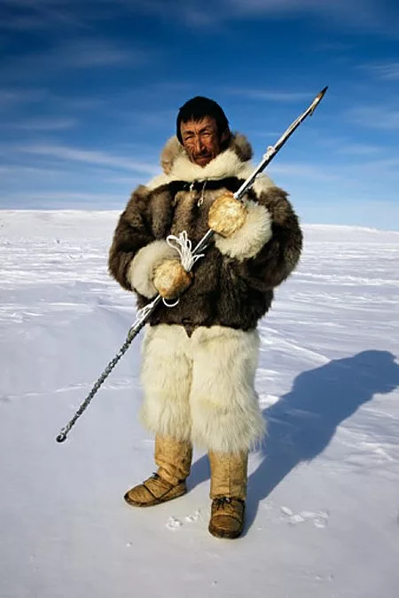
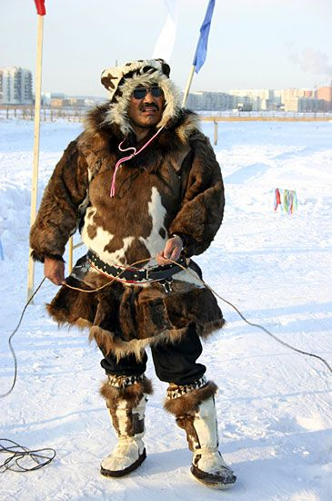
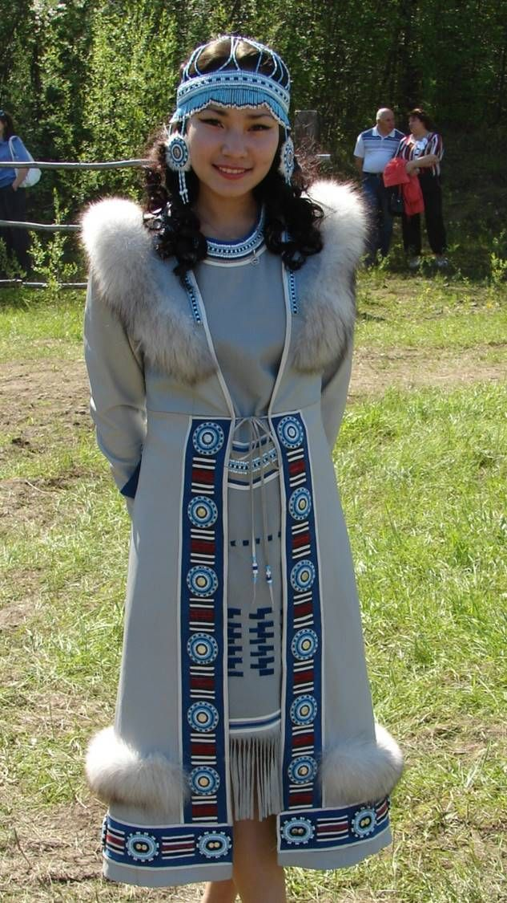
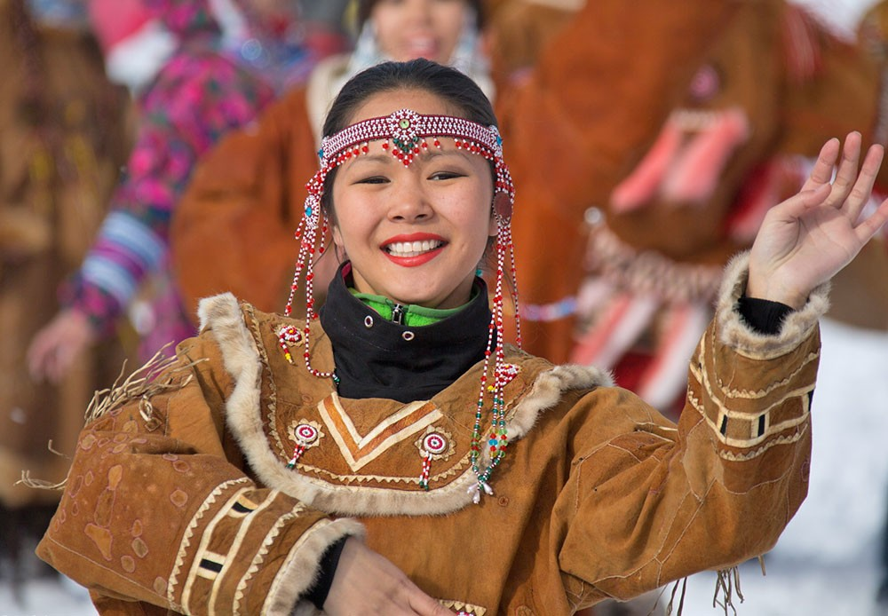

Столица Чукотского автономного округа
Анадырь, столица Чукотского автономного округа, раскинулся на берегу Анадырского залива Берингова моря. Этот суровый, но по-своему прекрасный край является домом для уникальных народов Севера.
Чукотка – это огромный, малонаселенный регион на крайнем северо-востоке России, покрытый тундрой, горами и прибрежными равнинами. Климат здесь субарктический, с продолжительной морозной зимой и коротким прохладным летом.
Природа Чукотки поражает своей дикой красотой: бескрайние просторы, северное сияние, лежбища морских животных и богатство ресурсов.
Коренные народы Анадыря

Эскимосы
Численность: несколько сотен человек
Один из малочисленных коренных народов Севера
Эскимосы, которых также называют юги, исторически обитали на побережьях Чукотского полуострова, включая территории, прилегающие к Анадырскому заливу.
Места проживания
Анадырь и его окрестности, Сиреники, Уакит, Чкалов
Традиционные занятия
Охота на морских млекопитающих
Китов, моржей, нерп - основной источник пищи и материалов
Рыболовство
В реках и прибрежных водах
Собирательство
Съедобных растений в короткое лето
Основные промыслы
Традиционная охота
Использование гарпунов и острог с глубокими знаниями природы
Обработка шкур
Изготовление одежды, обуви и чехлов для лодок
Резьба по кости
Создание украшений и предметов быта из костей и бивней моржа
Судостроение
Традиционные лодки, обтянутые шкурами

Чукчи
Численность: около 16 000 человек
Наиболее многочисленный коренной народ Чукотки
Чукчи сформировались на крайнем северо-востоке Евразии и представляют собой один из самых известных символов Чукотки с уникальной культурой адаптации к Арктике.
Основные группы
Тундровые чукчи (чаучу)
Кочевые оленеводы, жизнь связана с гигантскими стадами оленей
Береговые чукчи (анкальын)
Оседлые охотники на морского зверя на побережьях
Места проживания
Анадырь, Лаврентия, Лорино, Уэлен, кочевые стойбища в тундре
Основные промыслы
Крупностадное оленеводство
Олень дает пищу, одежду, материалы для жилищ
Морская охота
Добыча кита, моржа, тюленя на байдарах
Выделка шкур
Создание одежды с уникальным меховым орнаментом
Резьба по кости
Миниатюрные скульптуры и гравированные картины

Эвены
Численность в России: около 22 000 человек
Коренной тунгусский народ Северо-Востока Сибири
Эвены известны как искусные оленеводы и охотники, сумевшие освоить одни из самых суровых регионов планеты.
Места проживания на Чукотке
Билибинский район, село Омолон, западные районы округа
Традиционные занятия
Транспортное оленеводство
Олени как средство передвижения по тундре и тайге
Охота
Дикий олень, лось, горный баран, пушной зверь
Рыболовство
Стабильный источник пищи в летний период
Основные промыслы
Пушной промысел
Особенно важен для торговли с русскими и якутами
Выделка шкур
Создание практичной и красивой одежды с орнаментом
Кузнечное дело
Изготовление орудий труда и упряжи для оленей
Меховая вышивка
Украшение одежды подшейным волосом оленя

Чуванцы
Численность: около 1 500 человек
Один из самых малочисленных коренных народов Севера
Чуванцы сформировались в бассейне реки Анадырь с уникальной культурой, представляющей синтез юкагирских, чукотских и русских традиций.
Места проживания
Марково, Чуванское, Анадырь
Исторические группы
Осёдлые чуванцы
Рыболовство и охота на дикого оленя
Оленные чуванцы
Кочевое оленеводство под влиянием чукчей
Основные промыслы
Рыболовство
Заготовка рыбы методом квашения и сушки
Пушная охота
Шкурки песца и соболя для торговли
Выделка шкур
Одежда с элементами русского кроя и орнамента
Кузнечное дело
Изготовление нарт, лодок-долбленок и орудий охоты